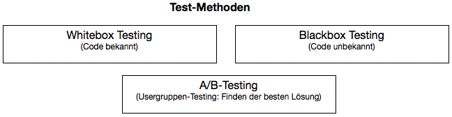
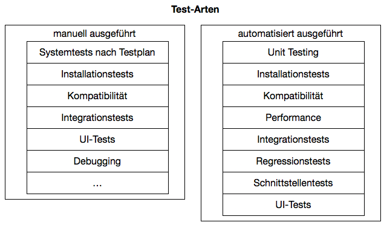
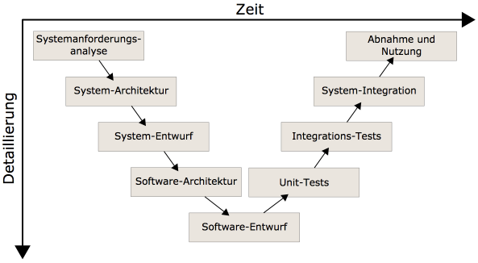
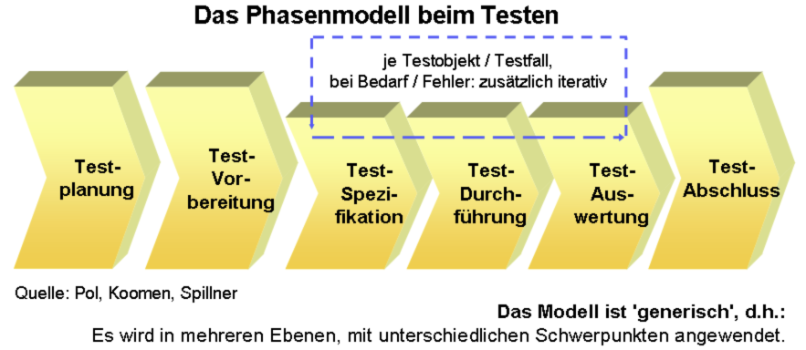
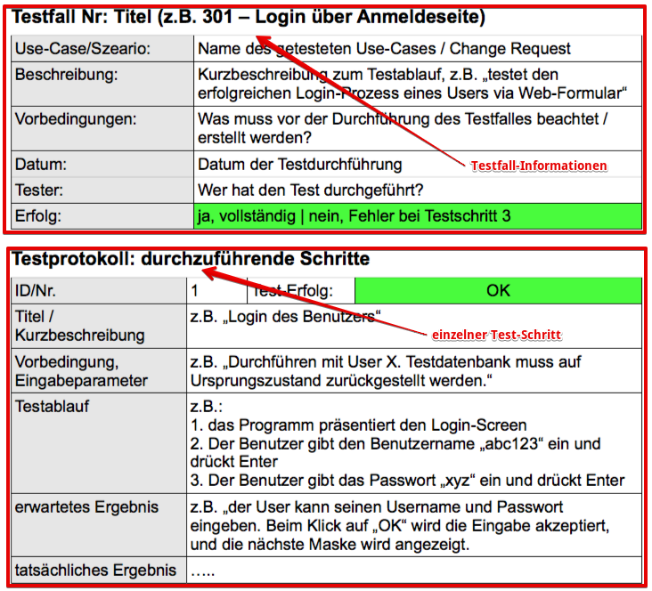

{% extends "../_base_template.html" %}
{% block title %}Lektion 15 - Testing {% endblock %}

{% block sections %}
<section data-markdown>
<textarea data-template>
<i class="fas fa-graduation-cap"></i> M151 - DB in Web-App einbinden
=============================

Heutiges Ziel
--------------

* Sie wissen, was „Software Testing“ bedeutet
* Sie kennen den Unterschied zwischen Black- und Whitebox-Testing
* Sie kennen die Phasen des Software-Testings
* Sie können Testfälle aus Anforderungen / Change Requests ableiten
* Sie wissen, was ein Testkonzept und ein Testprotokoll ist und können diese erstellen

</textarea>
</section>

<section data-markdown>
<textarea data-template>
<i class="fas fa-graduation-cap"></i> Testing
=============================

Sie haben Ihren Change Request erfolgreich umgesetzt / ausprogrammiert. Bevor Sie nun Ihr angepasstes Programm auf die Leute los lassen,
müssen Sie Ihre Software testen.

**Kurze Wiederholung aus dem Modul 326 - Padlet:**

* Software Testing - Was (welche Aspekte) testen wir bei Software?
* Welche Test-Arten / Vorgehensweisen / Test-Methoden kennen Sie (persönlich)?

**<i class="far fa-hand-point-right"></i> https://padlet.com/alex_schenkel/m151_testing**

</textarea>
</section>

<section data-markdown>
<textarea data-template>
<i class="fas fa-graduation-cap"></i> Testing
=============================

**Was (welche Aspekte) testen wir bei Software?**

* Ablauf / richtige Logik
* Richtige Resultate / erfüllt Anforderungen
* Benutzerfreundlichkeit
* Fehleingaben abfangen
* Sicherheit („Hackability“)
* Kompatibilität
* Performance
* ...

</textarea>
</section>

<section data-markdown>
<textarea data-template>
<i class="fas fa-graduation-cap"></i> Testing
=============================

**Welche Test-Arten resp. Test-Methoden gibt es?**




<i class="far fa-hand-point-right"></i> Software-Testing ist ein sehr weiter Begriff und wird ganz unterschiedlich interpretiert.
Quelle zum Thema: https://de.wikipedia.org/wiki/Softwaretest
</textarea>
</section>

<section data-markdown>
<textarea data-template>
<i class="fas fa-graduation-cap"></i> Testing
=============================

Selbständiges Studium - Startfolie
</textarea>
</section>

<section data-markdown>
<textarea data-template>
<i class="fas fa-graduation-cap"></i> Testing
=============================

**Test-Methoden: Whitebox-Testing**

Beim Whitebox-Testing hat man "Einblick" in die Funktionsweise / den Code der Software:

* testet interne Strukturen oder Abläufe eines Programms
* Kenntnis des Programmcodes sind notwendig
* Der Tester definiert Input-Werte, um bestimmte Code-Pfade zu testen und mit dem erwarteten Output zu vergleichen.

Verwendung normalerweise bei:

* Unit-Tests
* API-Tests
* Code-Coverage

<i class="far fa-hand-point-right"></i> Sie als Programmierer machen sehr viel Whitebox-Testing während der Entwicklung.

</textarea>
</section>

<section data-markdown>
<textarea data-template>
<i class="fas fa-graduation-cap"></i> Testing
=============================

**Test-Methoden: Blackbox-Testing**

Beim Black-Box-Testing hat der Tester keinen Einblick in die genaue Funktionsweise des Programms:

* testet die Software als „Black Box“, um die Funktionalität mit den Anforderungen zu vergleichen.
* es besteht kein Zugriff auf den Programmcode oder Wissen um die internen Strukturen.
* Die Tester wissen nur, was „das Programm tun soll“.
* „Test Cases“ beschreiben Input, Output und Vorgehen zum Testen.

Verwendung normalerweise bei:

* System-Tests
* Spezifikations-Tests
* User-Acceptance, Abnahme-Tests
* Performance-Tests
</textarea>
</section>

<section data-markdown>
<textarea data-template>
<i class="fas fa-graduation-cap"></i> Testing
=============================

**Test-Methoden: White- und Blackbox-Testing**

<i class="far fa-hand-point-right"></i> zu beiden Methoden gibt es sowohl manuelle wie auch automatisierte Test-Verfahren.

Auf automatisierte Test-Arten gehen wir aufgrund Zeitmangels nicht ein. Ein grosses Thema ist das so genannte „Unit Testing“,
automatisierte Tests, um Programmteile zu prüfen. Kurz zusammengefasst entwickelt man ein Testprogramm, um das eigentliche Programm zu testen.

<i class="far fa-hand-point-right"></i> Siehe dazu zum Beispiel jUnit (http://junit.org/junit5/), und PHPUnit (https://phpunit.de/): Solche Bibliotheken sind mittlerweile für alle Programmiersprachen verfügbar.
</textarea>
</section>

<section data-markdown>
<textarea data-template>
<i class="fas fa-graduation-cap"></i> Testing
=============================

**Test-Stufen vs Software-Entwicklungs-Stufen**

Jede Stufe der Software-Entwicklung erfordert eine andere Test-Stufe / Test-Zyklus.
Eine Entwicklungsstufe wird mit der entsprechenden Test-Stufe geprüft:



<i class="far fa-hand-point-right"></i> Als Grundsatz gilt: Je weiter "oben" Sie testen wollen, desto kompexer / komplizierter sind die Tests:

UI-Tests (Abnahme und Nutzung) sind um ein Vielfaches komplizierter als Unit-Tests (Software-Entwurf/Programmieren)
</textarea>
</section>

<section data-markdown>
<textarea data-template>
<i class="fas fa-graduation-cap"></i> Testing
=============================

**Test-Phasen**

Software-Testing spielt sich in mehreren Phasen ab:



* Während der **Testplanung** erstellen Sie ein **Testkonzept**
* für die **Testdurchführung / Auswertung** erstellen Sie ein **Testprotokoll**.


Definition / Inhalt der Phasen: siehe https://de.wikipedia.org/wiki/Softwaretest#Testplanung
</textarea>
</section>

<section data-markdown>
<textarea data-template>
<i class="fas fa-graduation-cap"></i> Testing - Testkonzept
=============================

**Das Wichtigste: die Planung: Erstellen Sie ein Test-Konzept!**

Egal, wie Sie testen, das Wichtigste ist die Planung (siehe vorhergehende Folie). Dazu erstellen Sie ein
**Testkonzept**:

Das Testkonzept definiert: 

* **WER** testet 
* **WAS** 
* mit welchen **METHODEN** und
* was sind die **VORAUSSETZUNGEN**, um die Tests durchführen zu können

Siehe **HERMES**, das Informatik-Projektframework des Bundes zu diesem Thema:

Siehe https://www.hermes.admin.ch/de/projektmanagement/verstehen/ergebnisse/testkonzept.html

Ein Testkonzept soll über folgende Punkte Auskunft geben:

* Testziele: Was ist der Sinn Ihrer Tests? Was wollen Sie erreichen?
* Testobjekte: Was testen Sie konkret?
* Testarten: WIE testen Sie? (Unit Tests, manuelle Systemtests ...)
* Voraussetzungen (Tester, Vorkenntnisse)
* Fehlerklassen
* Start- und Abbruchbedingungen
* Test-Infrastruktur
  * Systeme, Aufbau
  * (Test-)Daten
  * Hilfsmittel (Bsp: welchen Browser verwenden Sie)
* Testfälle: Beschreiben Sie alle Testfälle anhand nachfolgendem Protokoll:<br/>
  https://www.hermes.admin.ch/de/projektmanagement/verstehen/ergebnisse/testprotokoll.html

</textarea>
</section>

<section data-markdown>
<textarea data-template>
<i class="fas fa-graduation-cap"></i> Testing - Testprotokoll
=============================

Während des Testens protokollieren Ihre Tester die Ergebnisse in einem **Testprotokoll** 
<br />(siehe) https://www.hermes.admin.ch/de/projektmanagement/verstehen/ergebnisse/testprotokoll.html

Das Protokoll zeigt klar für jeden Testfall auf:

* **Wer** getestet hat
* **Wann** getestet wurde
* das **erwartete Ergebnis**
* die **durchgeführten Schritte**
* das **tatsächliche Ergebnis**.

<i class="far fa-hand-point-right"></i> Schauen Sie sich die Testprotokoll-Vorlage vom oben genannten Link an!

</textarea>
</section>

<section data-markdown>
<textarea data-template>
<i class="fas fa-graduation-cap"></i> Testing
=============================

Selbständiges Studium - Ende
</textarea>
</section>

<section data-markdown>
<textarea data-template>
<i class="fas fa-flask"></i> Testing - Testfall entwickeln
=============================

**Entwickeln von Testfällen anhand Change Requests**

Wir erarbeiten einen Testfall für einen Blackbox-Test für manuelle Systemtests am Beispiel des Change Requests von letzter Woche:

> **„Benutzer müssen deaktiviert werden können. Inaktive Benutzer dürfen sich nicht mehr einloggen können.“**

Aus einem Change Request lassen sich nun Testfälle ableiten: Dazu müssen wir uns überlegen, auf welche Teile, auf welche
Konzepte die Änderung einen Einfluss hat:

* ändert das UI?
* ändert Business-Logik / Verhalten?
* hat diese Änderung einen Einfluss auf die Performance?
* hat diese Änderung einen Einfluss auf Sicherheit / Berechtigungen / Authentifikation?

<i class="far fa-hand-point-right"></i> Aus diesen Überlegungen sind nun verschiedene Tests / Testfälle zu entwickeln.
</textarea>
</section>

<section data-markdown>
<textarea data-template>
<i class="fas fa-flask"></i> Testing - Testfall entwickeln
=============================

Wir wollen nun einen Testfall entwickeln: Die Business-Logik ändert sich, wir wollen das neue Verhalten testen.

Wir erstellen dazu einen manuellen Systemtest, welcher folgendes abdeckt:

* Der Testfall deckt die Anforderung ab.
* Der Testfall wird in mehreren Test-Schritten beschrieben, durchgeführt und kontrolliert.
* Es wird unterschieden zwischen **„konstruktiven“** und **„destruktiven“** Testfällen:
  * konstruktive Tests decken das Szenario so ab, wie beschrieben.
  * destruktive Tests versuchen, anhand von Fehleingaben / Fehlverhalten das Szenario "zu sprengen", resp.
  testen das Verhalten bei Fehleingaben/ Störungen.

**Aufgabe:**

Sie finden auf Moodle eine Vorlage zu einem Testprotokoll (grober Überblick auf der nächsten Seite).
* Entwickeln Sie mind. 2 Testfälle: einen **Konstruktiven** und einen **Destruktiven** Testfall anhand der Protokollvorlage.
* Überlegen Sie sich die notwendigen Testschritte und halten Sie diese im Protokoll fest.
</textarea>
</section>

<section data-markdown>
<textarea data-template>
<i class="fas fa-flask"></i> Testing - Testfall entwickeln
=============================

**Aufbau eines Testprotokolls**

Sie finden Vorlagen auf Moodle, sowohl eine vom Projektmanagement-Framework "HERMES" sowie eine eigene, welche sich aber
an HERMES orientiert.

Der Aufbau sieht folgendermassen auf:



</textarea>
</section>
{% endblock %}
